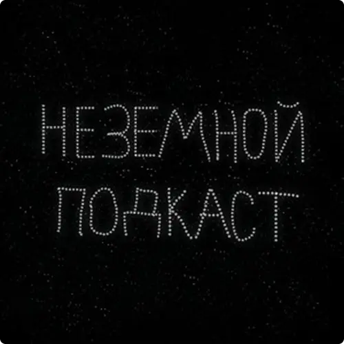

О подкастеКто и когда полетит на Луну? Где бронировать лунные отели? И почему волки воют на Луну? На необычные вопросы о Луне отвечает астроном Владимир Сурдин.51 4053 200Почитай исследование для закрепления материалаИсследованиеПочему Луна не падает на Землю?